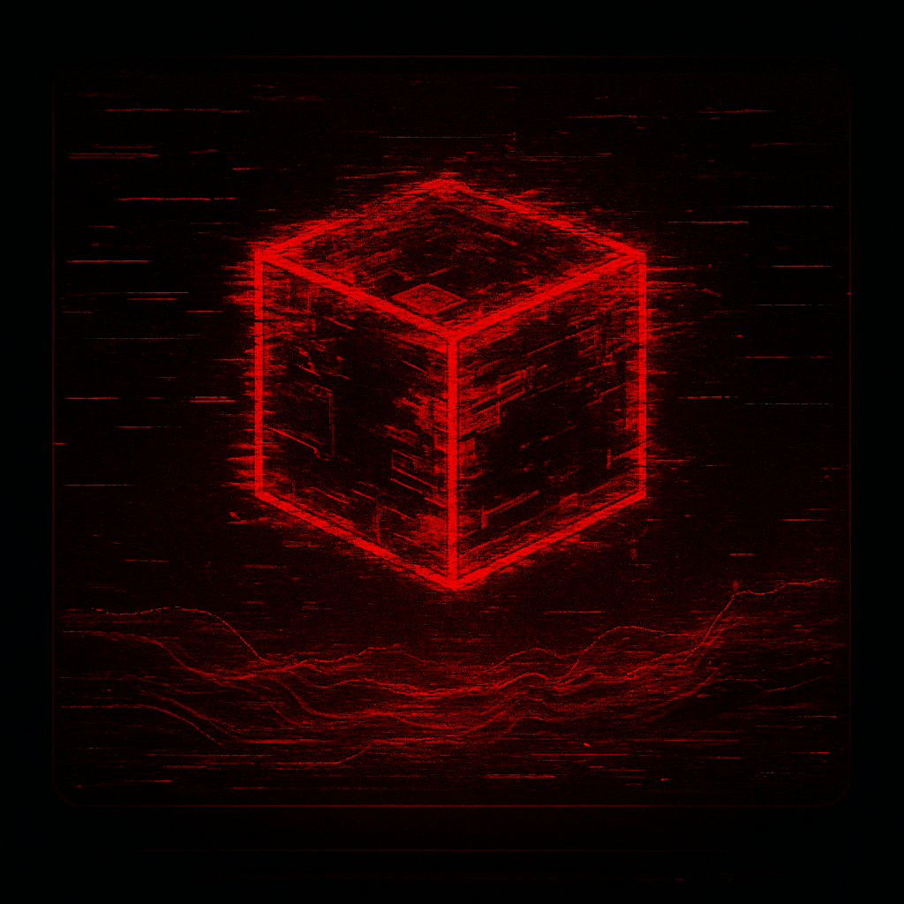

Overview
AttackStudio is a small, self-contained lab obsessed with
retro displays, 4-color palettes,
and machines that feel slightly haunted. Expect terminals, CRT
afterglow, and handheld-style games locked to strict hardware-like
limits.
This node is intentionally read-only. No contact
forms, no inbox, no comments — just a status beacon for whatever is
currently being tested, broken, and rebuilt in the background.
Lab Work
Current focus is on handheld-inspired builds that
lean into constraints: tiny resolutions, hard palette limits, and
game logic tuned for cartridge-style experiences.
Most projects are private and unnamed, referenced only as
internal builds. The goal is to explore atmosphere, tension
and narrative through minimal pixels and tight mechanical loops,
rather than big engines or endless content.
About

AttackStudio operates as a single-developer lab: design, code, art,
and audio handled in-house. The vibe is
cyberpunk isolation — quiet terminals, long test
sessions, and worlds that feel like corrupted operating systems.
Public releases, if they happen, will show up somewhere linked from
this node in the future. Until then, this site serves as a minimal
landing page and visual heartbeat.